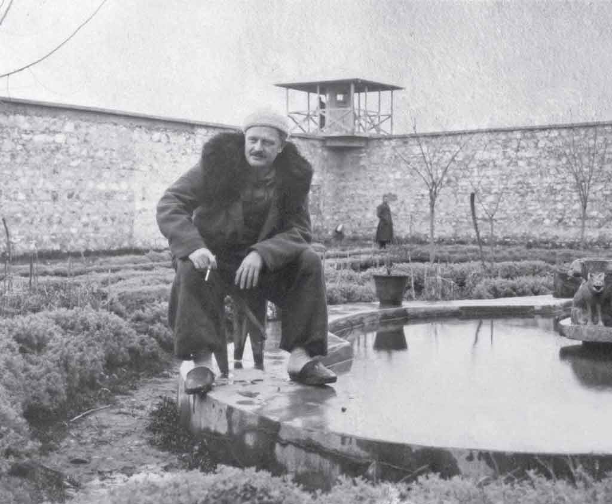

1946, Bursa Cezaevi bahçesi (Memet Fuat arşivi)
“...
Hapisane hâlâ düşlerine girer,
uyanırsın sıçrayarak.
Yakanı bırakmaz alışkanlıklarıyla yasakları hapisane yıllarının.
Kapatamazsın mektuplarının zarflarını,
karavana vakitlerini, beklersin
ve akşamlar kararınca kapının dışardan kilitlenmesini,
yanmasını ampullerin kendiliğinden.
(Nâzım Hikmet, Son Şiirleri ”Tanganika Röportajı, On Mektupta” -Dokuzuncu Mektup-, s. 170)